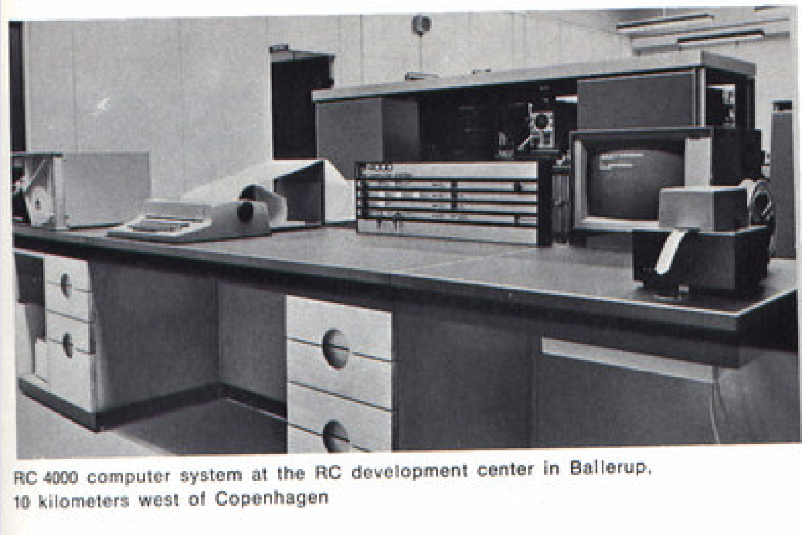

Once processes share nothing, where can the scheduler's choice still reach the result of a program, and what does the capacity of a channel change?
// two threads run this at once, from balance = 100
int b = balance; // both may read 100
balance = b + 50; // both write 150All six schedules of the four instructions: two end at 200, four at 150. In the interleaving model, four of the six lose a deposit.
This block takes the shared data away; what remains of the scheduler's choice is the block's question.
| Block 1 | The RC 4000 nucleus (1969); nondeterminism and the absence of sharing; Kahn process networks; contested communications and three resolutions; the RC 4000 through the lens: requests and replies; channels (CSP, occam, Go); buffer capacity. |
| Block 2 | Actors and mailboxes (Hewitt, Agha, Erlang); fairness; the delivery assumption and the boundary with session 9; the cost of message passing, and channels against actors. |
| The lab | A message-passing library built by the students: a toy RC 4000 nucleus, one queue under two disciplines, the handshake, select, and a closing comparison. |

The machine returns twice in this block: for where its shared memory went (part 2), and for the two resolutions it uses at once (the conversation slide of part 4, and the appendix).
| Data race (recall) | Two accesses to the same location, at least one of them a write, and nothing ordering them. Locks restore order, but only if every access takes them; two locks taken in opposite orders can deadlock. |
| Execution and result (recall) | The execution, which steps run in which order, can differ from run to run while the result stays the same. Unless the execution is named, nondeterminism in this lecture means a difference in the result. |
| Deterministic program | Every run on the same input data gives the same observable results. |
| Nondeterministic program | The same input can give different results, depending on choices the program text does not fix, here the scheduler's. A clock or a random draw counts not as input but as a source of nondeterminism. |
The useful way to describe this is not "shared memory is hard".
Each process owns its data, and the only way to affect another process is to send it a value: processes send and receive messages instead of reading and writing shared variables (Andrews and Schneider, 1983).
The programming model: two processes, each with its own memory; A holds a message m.
In the model, m goes from A to B, and A keeps its own copy.
The cut through the floor shows what the model hides: the nucleus, with a pool of buffers and one queue per process.
Send message: the nucleus takes a free buffer from the pool.
It copies m from A's memory into the buffer.
It links the buffer, b1, at the tail of B's queue, and send message returns its identity to A.
Wait message: the nucleus takes b1 from B's queue and gives B a second copy of m, with the sender and b1's identity; b1 stays out of the pool, held for the answer.
Both primitives went through the nucleus to the pool and the queue: the shared memory is still there, in one place. On the single processor the paper implies, a primitive runs with interrupts off, so in effect one lock guards that place.
The same trusted place in three systems: the processes stand outside it, every message passes through it, and no process touches what is inside.
The RC 4000: the nucleus holds a pool of buffers and one queue per process, the sorting room no process enters; a primitive runs with interrupts off, in effect one lock.
A Go channel is a runtime structure, hchan, with a buffer, the queue of waiting senders, the queue of waiting receivers and a lock: the runtime of go1.27, not the specification, which says nothing of locks.
An Erlang mailbox is a queue per process, managed by the virtual machine.
That place only has to be right once, as long as messages carry values and not shared pointers.
Kahn's own example (1974, figure 2): f prints what it reads from Y and Z in turn and sends it on X; g sends what it reads from X to T1 and T2 in turn; h0 and h1 each send a first value, 0 and 1, then copy their input. Each process is a sequential, deterministic program.
Each channel has exactly one writer and, in the form this lecture keeps, one reader: X is written by f and read by g, and by nobody else.
A write never waits: g's sends on T1 land in the queue however slowly h0 reads, and the queue grows; the channel is an unbounded queue.
A read names one channel and waits until a value is there: f waits on Y while Z already holds a value.
No choice among inputs anywhere: a process cannot ask whether something is on a channel, and cannot wait on whichever channel is ready first; which channel f reads next is fixed by its own program text.
Kahn's result, determinism. Under any fair schedule, one in which every process that can run eventually does, the network computes the same sequences on its channels; an unfair schedule computes a prefix of them.
The program: two goroutines send on one channel c, and main receives twice.
One run: world is received first and printed first; sender 1 waits until main receives again. This is the order nearly every run shows.
Another run: hello first, and the output changes. With go1.27.1 at GOMAXPROCS 2 it happened 10 times in 3,000; the specification leaves the order among senders open.
One channel per sender, main reading a then b: in one run main waits on a while world already waits on b; in the other, world waits. The waiting differs, the output never does.
A plain shell pipeline is a Kahn network with bounded pipes: each pipe has one writer and one reader, and each program is deterministic, reading one input and writing one output. Five command lines, run on the lecture machine:
seq 1 100000 | grep 7 | sort -r | head -5
seq 5 | while read x; do sleep 0.$RANDOM; echo $x; done | awk '{print $1*$1}'
printf 'b\nZ\na\nB\nA\n' | LC_ALL=C sort
(dd if=/dev/zero bs=1k count=200 2>/dev/null; echo 'writer done' >&2) | (sleep 3; wc -c)
{ (sleep 0.0$RANDOM; echo hello) & (sleep 0.0$RANDOM; echo world) & wait; } | catThe first printed the same five lines in 53 runs.
The second took between 1.35 and 2.38 seconds and printed 1 4 9 16 25 every time: a slow stage changes when, not what.
The third, under LC_ALL=C, printed A B Z a b; under en_US.UTF-8 it printed a A b B Z: the environment is an input.
The fourth shows that a pipe is bounded: it holds 65,536 bytes on this machine, so the writer of 200 KiB finishes only after the reader wakes, at 3.02 seconds.
The last puts two writers on one pipe: in 20 runs, 14 printed hello world and 6 world hello. It is a merge, the first way out of Kahn's conditions.
A deterministic network cannot:
A merge that takes from whichever input has a value is accordingly not a Kahn process (Lee and Parks 1995). Real systems need all three, so competition has to be let back in.
Two senders, P and Q, and one receiver, R, drawn three times on one scaffold; the drawings differ in the one element that resolves a contest for R. P and Q each have a message for R; q is sent first.
No contest. One channel per sender, and R reads a, then b: Kahn's network. q, sent first, waits on b; there is one outcome, p then q, at the price of that wait.
A guarded choice in the program. R takes a partner that is ready: Hoare's guarded commands, Go's select. Here q is ready first and is taken; where both are ready, Go takes one by a uniform pseudo-random selection, so p can come first: two outcomes.
Arrival order in a queue. Both messages go into R's queue, and R takes them from the front: the RC 4000, actors, Erlang. q arrived first and is served first; another run can bring p first: two outcomes.
Lee and Parks (1995) list five ways to add nondeterminism to a Kahn network:
Message passing removes the last; a language adds a guarded choice.
Once nothing is shared, nondeterminism can enter at four communication points, or inside a process:
Process D has already sent d to the server S; the buffer holding d waits at the head of S's queue.
C sends m to S: the nucleus takes buffer b7 from the pool and links it behind d; C continues at once, holding b7's identity.
While C does other work, D sends x to C: another buffer lands in C's queue.
C calls wait answer(b7) before the answer exists: C waits.
S calls wait message, first come, first served: d first, and a copy of d goes into S's memory.
Then b7: a copy of m goes into S's memory, and b7 stays in the nucleus, held for the answer. Arrival order has settled the contest between D and C.
S sends its answer: the nucleus puts it in the same buffer, now b7 · r, which joins C's queue behind x, an unrelated message.
C's wait answer(b7) takes b7 past x, by its identity, which the nucleus checks: a copy of the answer goes into C's memory. Nobody competed for the reply.
The conversation is over: b7 goes back to the pool, which is finite, with a limit per process on the messages it may have outstanding. The primitives in full: appendix, for the lab.
Hoare proposes input and output as basic primitives of programming, and parallel composition of communicating sequential processes as a fundamental way to structure programs. Four of its choices define the language as this story reads it.
X?(x, y) in one process and DIV!(3*a+b, 13) in the other together act as the assignment (x, y) := (3*a+b, 13).*[ n < 10; producer?x →
buffer(n) := x; n := n + 1
□ n > 0; consumer?more() →
consumer!buffer(0); shift
]Hoare's bounded buffer, sketched: the process offers two communications and takes whichever partner turns up.
The alternative command: two guarded branches, separated by □, repeated by *[ ].
A guard may end in an input command, and the guarded branch runs only if the named source is ready to output: the producer while the buffer has room, the consumer while it holds stock.
The branch after the arrow runs once the communication has happened: the item stored and counted, or the first item sent and the buffer shifted.
When several guards are ready, exactly one is chosen, arbitrarily: the language selects, at this one visible point.
This is the guarded choice in the program: the programmer marks one visible point, the language selects among the partners ready there, and everything else stays deterministic.
Kahn's networks (1974) and CSP (1978) share three things; Hoare listed the differences himself (1978, §7.7), and only one of them decides the values a program computes.
| Kahn's networks | CSP (1978) | Decides the values computed |
|---|---|---|
| no choice between sources of input | a guarded choice among ready partners | yes |
| output buffered to any degree | no buffering: the handshake | no: waiting and deadlock |
| output fanned out to any number of readers | one partner per exchange | no: the same value for each |
| processes run forever | the parallel command terminates | no: a history ends |
Hoare's list, 1978, §7.7; the 1985 book repeats the first three differences (§7.3.3). Of the four, only the first decides the values computed.
Four reasons for the unbuffered send come from different sources; only the second is Hoare's own, from the paper of 1978.
| Reason | Provability | No arbitrary buffer size | Knowledge | Backpressure |
|---|---|---|---|---|
| Source | a later reading | Hoare 1978 | Andrews and Schneider 1983 | a later reading |
B :: *[ x: integer; P?x → C!x ]1978: B names its partners, P and C.
B(in, out) = in?x → out!x → B(in, out)1985: B names its own two ends.
Two forms of one buffer process B, which receives a value and passes it on.
In 1978 style, B names its partners, P and C. To reuse B between two other processes, the programmer must rewrite B.
With channels, the parameters in and out are the channels and the right-hand side is B's behavior; whoever assembles the system plugs real channels into them: B(left, mid) ‖ B(mid, right) joins two buffers through mid.
The handshake is unchanged; only the naming changed. occam (1983) and Hoare's 1985 book made named synchronous channels the norm, and that channel version is what Go took up.
nil channel blocks forever.select chooses among cases that can proceed by "a uniform pseudo-random selection". With none ready, it takes default if there is one; otherwise it blocks.Go's select allows send cases as well as receive cases; Hoare's 1978 language allowed only input guards. That difference matters in session 12.
reply_server.gotype req struct {
n int
reply chan<- int // send-only
}
func counter(reqs <-chan req) {
total := 0
for r := range reqs { // one request at a time
total += r.n
r.reply <- total // the answer goes back
}
}
// a client
reply := make(chan int)
reqs <- req{5, reply}
fmt.Println(<-reply)Go's reply channel is the RC 4000's identified conversation with a channel as the identity: a request carries the channel on which its answer is to come back.
The request carries its reply channel, typed send-only, chan<- int.
The server takes one request at a time from reqs: the queue of requests is the nucleus's queue of the server.
The answer goes back on the channel the request carried: the identified reply.
A client makes a fresh reply channel, the identity of this conversation.
It sends the request with the channel inside.
It receives on its own channel. Only the client reads it, by convention: the type stops the server from reading it, and nothing stops another goroutine that holds it. The nucleus checked the identity; here the program keeps it.
A select with a timeout as a small Petri net: a circle is a state, a bar is a communication, a dot is a token; the clock is one more sender. The goroutine is blocked in select: neither the server nor the clock is ready.
In one run the server is ready first: its bar fires, r crosses it, and the goroutine goes on into use(r).
In another run the clock fires first: the timeout branch runs, giveUp().
When both are ready as the select runs, it takes one case by a uniform pseudo-random selection; the two runs take different branches. In the run that takes the timeout, the server's send on the unbuffered reply channel stays blocked, since nothing receives it.
send_completion.goa, b := make(chan int), make(chan int)
go func() { a <- <-b }()
fmt.Println(<-a)fatal error: all goroutines are asleep - deadlock!
A missing partner: main receives on a, the goroutine waits on b before it would send on a, and nobody sends on b.
cycle_min.gotoMain, toOther := make(chan int), make(chan int)
go func() { toMain <- 101; fmt.Println(<-toOther) }()
toOther <- 1
fmt.Println(<-toMain)fatal error: all goroutines are asleep - deadlock!
A cycle: each goroutine sends first and receives afterwards; on unbuffered channels each send waits for a receive the other reaches only after its own send. This cycle deadlocks in every run.
A deadlock needs no lock, only waiting: a lock is one thing a thread can wait for, and any operation that waits can play the part a lock played in session 7.
| Capacity | Systems | What a send means |
|---|---|---|
| 0 | CSP (1978, 1985), occam, Go's unbuffered channel | the receiver has the value; the smallest cycle of sends already deadlocks |
| k | Unix pipes (65,536 bytes here); make(chan T, k); the RC 4000's pool, a limit per sending process | the value is queued and the sender goes on; a full pipe or Go channel makes the sender wait, which is backpressure |
| unbounded | Kahn (1974); actors and Erlang's mailboxes (block 2) | a sender never waits and learns nothing of the receiver; no backpressure, and memory grows |
| Asynchrony | a send that does not wait for its receiver: a matter of buffering |
| Nondeterminism | once nothing is shared, a matter of contests, tests for emptiness and processes nondeterminate inside |
cycle.go// go run cycle.go <capacity> <sends each>
// every receive prints its value; main then
// waits for the goroutine and prints finished
toMain := make(chan int, k)
toOther := make(chan int, k)
go func() {
for i := 1; i <= sends; i++ { toMain <- 100 + i }
for range sends { <-toOther }
}()
for i := 1; i <= sends; i++ { toOther <- i }
for range sends { <-toMain }$ go run cycle.go 0 1 fatal error: all goroutines are asleep - deadlock!
$ go run cycle.go 1 1 other received 1 main received 101 finished
$ go run cycle.go 1 2 fatal error: all goroutines are asleep - deadlock!
$ go run cycle.go 2 2 other received 1 other received 2 main received 101 main received 102 finished
Capacity decided who waits and whether the program deadlocks; it computed no other value. The missing partner stays at every capacity, since a receive on a channel nobody writes waits forever. A buffer can break a cycle; it cannot supply a missing partner.
Determinism comes from the absence of competition, not from the buffer. A Kahn network gives the same values with any buffer size; with buffers that are too small it can deadlock where unbounded buffers would not. The pipelines of part 3 with one writer per pipe are an instance.
Size zero changes what a choice means. With a handshake, a select picks among partners ready at that instant, and the sender knows the value arrived. With buffers, sends finish early, more interleavings become possible, and the sender knows less.
A bounded buffer moves the senders' contest. When it is full, senders compete for the next free slot instead of for the receiver. In Go, a send case in a select is ready on a buffered channel when there is room, on an unbuffered one when a receiver is waiting.
Eventual delivery with no bound on delay is where actors get unbounded nondeterminism. The source is the fairness assumption and not the buffer: senders never wait and delivery is assumed eventual, so outcomes can become infinite (block 2).
Backpressure against load shedding. Unbounded buffers give no backpressure: a slow receiver goes unnoticed while its mailbox grows. A bounded buffer that blocks the sender gives backpressure, paid for in blocking bugs; one that drops the message or returns an error sheds load without blocking.
Capacity decides which interleavings of sends and receives can occur; its exact counterpart in session 7 is the initial count of a counting semaphore, not the lock. A lock forbids two threads to be in one region at the same time; a capacity forbids one side to run more than k steps ahead of the other.
| Capacity of a channel (session 8) | Semaphores (session 7) |
|---|---|
| 0, the handshake | a rendezvous: one semaphore signals that a value is there, a second that it was taken, and a third keeps a second sender out; Java's SynchronousQueue, which has no internal capacity, "not even a capacity of one" |
| k | Dijkstra's bounded buffer (1965): a semaphore of queuing portions that starts at 0, a semaphore of empty positions that starts at the buffer's size, and a binary semaphore that guards the array; the producer ran at most k items ahead |
| unbounded | Dijkstra's first buffer: the semaphore of queuing portions and the binary semaphore, with no count of empty positions, so the producer never waits |
| The number | fixed at creation in both cases; the code that uses it only sends and receives, or acquires and releases |
| A reading of it | len(ch) for a Go channel, availablePermits() for a Java semaphore: out of date by the next statement, since another thread can change it at once |
| A decision on it | a test for emptiness in the sense of part 4, whose outcome depends on timing; Dijkstra's semaphore has no such operation, P and V being the only way in |
The interleavings that message passing seemed to remove are still there, in two places.
The interleavings of accesses to shared memory go into the one trusted place underneath, the buffer and the lock that orders them.
The scheduler's choices that can reach the results go to the few marked points where the program admits a contest: a merge, a guarded choice (CSP, Go), arrival order in a queue (the RC 4000, the actors).
Determinism comes from the absence of contest, not from the buffer: no contest leaves one outcome at the price of waiting; a guarded choice or arrival order leaves two, at one visible place.
Capacity, the initial count of a semaphore under another name, is the block's second parameter: one axis from 0 through k to unbounded.
At 0, the handshake: CSP (1978, 1985), occam, Go's unbuffered channel.
At a finite k: the RC 4000's pool, Unix pipes, make(chan T, k); Go's channels span 0 to k.
Unbounded: Kahn's networks, and the actors and Erlang mailboxes of block 2.
At 0 the sender knows the receiver has the value, and the smallest cycle deadlocks; at k backpressure, the sender waiting only when full; unbounded, no waiting, no knowledge, and memory that grows.
In a Kahn network the values computed are the same everywhere on this axis; capacity decides who waits, when, and how many interleavings remain.
Block 2 takes the request half of the RC 4000's conversation to its full form, the mailbox: a send that never waits, an arrival order left free, a delivery assumed.
client:
buf := send message(server, m)
-- returns at once
...other work...
answer := wait answer(buf)server:
loop
(sender, m, buf) := wait message()
...serve m...
send answer(buf, result)The four primitives of the 1970 paper, two on each side of one conversation.
The client calls send message, naming the server; within its limit of outstanding messages, the call returns at once with the identity of the buffer used, and the client goes on with other work.
The server waits in wait message until a message is in its queue, and receives the sender's name, the message and the buffer.
It serves the request and calls send answer, which copies the answer into the same buffer; the server continues at once.
The client calls wait answer on its buffer and waits until the answer is there; the buffer then goes back to the pool.
| Requests | A send names a process, which has one queue; messages from every sender land in it in arrival order, and wait message serves them first come, first served. When several clients compete for one server, arrival order in the queue resolves the contest: the mailbox family's resolution, four years before Hewitt's actors. |
| Replies | The answer travels back in the same buffer, and the client waits for that buffer by its identity. Nobody competes for a reply, because the client waits for one identified item and not for the next thing in its queue: the no-contest resolution, obtained by identifying the conversation. |
| Today | Go's reply channel carried in the request (part 5); Erlang's reference matched by a selective receive (block 2). The nucleus checks the identity; Go's and Erlang's programs keep it by convention. |